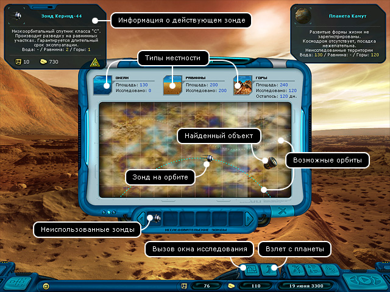
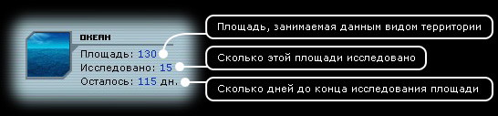

Руководство рейнджера
> Экран исследования планет
|
Руководство рейнджера
> Экран исследования планет
|
| Экран исследования планет На незаселенных планетах вы можете обнаружить различные объекты, спрятанные пиратами или выпавшие из сбитых кораблей. Высадившись на незаселенную планету, следует открыть карту исследователя (кнопка E), взять зонд и выбрать траекторию полета из возможных на карте. Обратите внимание на число оставшихся дней до окончания исследования. Если вы высадите несколько зондов, то сможете исследовать планету быстрее. Внимательно смотрите на характеристики зонда, к примеру, если зонд не может исследовать океан, то высаживать его на океаническую планету бесполезно. |

| Информация о деятельности ваших зондов будет регулярно обновляться на информационной панели в подсказке "Собственность вне корабля". Вы можете спокойно лететь по своим делам, а зонды тем временем будут работать. Вернувшись назад на планету, вы сможете собрать найденные зондами вещи, снять зонды с орбиты и полететь в другое место. Описание местности:  Каждый зонд рассчитан для работы с определенными видами территории и от этого зависит его скорость работы. Мощность зонда измеряется в млн. кв. км исследованной территории 1 за день. Классификация зондов:
|